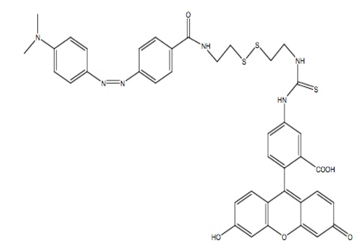

PMR-CYS-FITC (DSSQ)
DSSQ (Quenched) Probe uses PMR to Quench Fluorescein

DSSQ (Quenched) Probe uses PMR to Quench Fluoresceindo

EXmax: 485 - 495
EMmax: 516 - 525
Each Probe quantitatively detects a wide range of thiol reductants TCEP, DTT, HcV...
Responsive to biologically relevant concentrations changes for glutathione.
Probe can measure thiols in bacteria and zebrafish embryos


Fluorencence emission profiles for reaction between PMR-Cys-FITC (DSSQ1) and GSH at [GSH] = 4 mM (a), 8 mM (b) and 16 mM (c), The lowest profile was at 0 mM GSH followed by 5 min, 10 min, 20 in, 40 min and 60 min after adding GSH respectively. Data were fitted to the exponential equation: F = F0a(1 - e(-kt), where a = F max-F0? the fouorescence change due to reaction, and k is the rate constant for GSH reductionof the DSSQ probe. (d) Rae constant for reduction the dithio in DSSQ, as a function of [GSH]. k is first order in [GSH] (note the k values were manipulated by a factor of 102). Reactions were carried out in 100 mM Hepes buffer, ph 7, with excitation at 490 nm, and at 25OC. Fluorescence readings were done on a Jasco FP-6500 spectrofluorotometer.